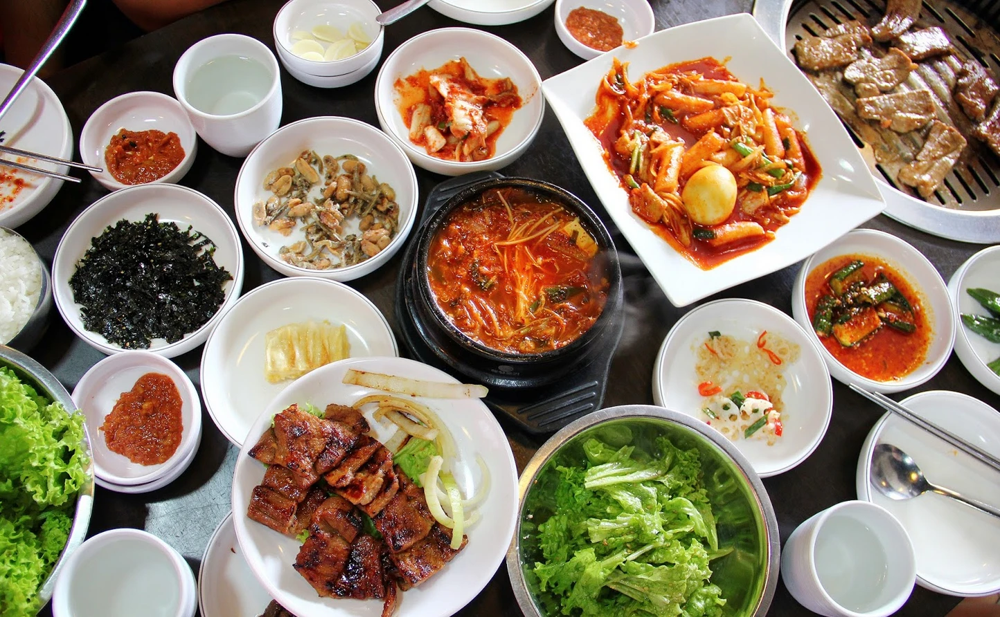

Behold, giant Buddha. There are plenty of other places to visit though, if Buddhism isn't your thing. Emperor Qinshihuang's Mausoleum site, the place where that whole terracotta army was buried underground, the Zhangjiajie National Forest that I feel like inspired that one scene in the Avatar, can't forget about the Great Wall either. Overall I think China would be an amazing place to visit and see.


Korea in itself is beautiful, but I really just love the food. If you're ok with spiciness, i'd recommend Korean food to anyone! Because veggies are used so much in it, I feel like I can never get full from it. Some recommendations would be: kimbap, jjigae, and dol-sot bibimbap. You really can't go wrong with any of those. As someone that's half korean, it'd also be a chance for me to connect more with the culture.

Ancient Egyptians contributed so much to modern society - calendars, language, math, medicine, etc. It'd be really humbling to visit and experience some of those ancient temples. Pictured to the left is the temple of Abu Simbel, which was actually relocated to it's current position in the 1960's to avoid being submerged by water.

Honestly, Machu Picchu (pictured left) just looks beautiful and Peru itself is a beautiful country. Not only does Peru have an insane geographical landscape, but it also has a desert oasis, Huacachina, which gives me very strong Kara Kara bazaar vibes.

The whole Grand Canyon is definitely on the list, but it's something about the Antelope Canyon that really draws my attention. This is probably the most feasible place on my list to go and visit. In addition to Antelope Canyon, there's also Havasu Falls which is gorgeous, but I believe you have to make reservations to go a year in advance because it's limited entry. It's also on an indian reservation like Antelope Canyon.